Naval Hunter
Player guide for the Game Boy Advance version. Two fleets, two grids, one shell at a time.
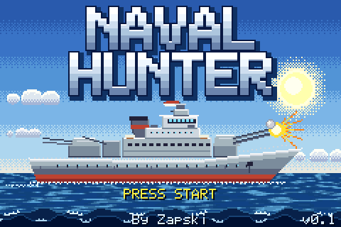
You can't see the enemy's ships, and it can't see yours. Sink all seven of its ships before it sinks all seven of yours.
Controls
| Screen | Button | Action |
|---|---|---|
| Title | Start | Go to the menu |
| Menu | A | Deal your fleet at random and start |
| B | Place your own fleet | |
| Select | Change the level | |
| Placing ships | D-pad | Move the ship |
| B | Turn it | |
| A | Place it | |
| Start | Deal the rest at random and start | |
| Battle | D-pad | Aim (hold to keep moving; the cursor wraps round the edges) |
| A | Fire | |
| A or B | While a shot is showing: skip the animation | |
| Win or lose picture | Start or A | Skip it |
| Both fleets, at the end | Start | Play again, from the menu |
There's no pause, and none is needed: nothing happens until you fire. Nothing is saved when you switch off.
Starting a game
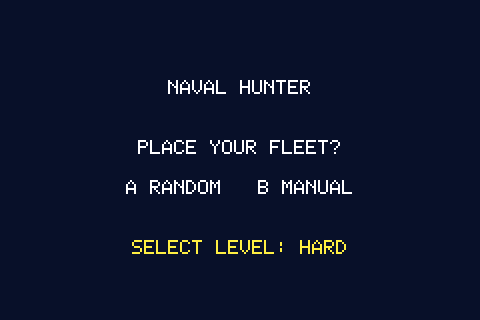
Press Select until you see the level you want, then press A or B. The level stays set when you play again.
The fleet
Both sides have the same seven ships, 18 squares to hit on each side:
| Length | How many | |
|---|---|---|
| 5 | 1 | |
| 4 | 1 | |
| 3 | 1 | |
| 2 | 2 | |
| 1 | 2 |
Placing your own
Ships come in order, longest first. Ships may not touch, not even at a corner. The bottom line names the ship and says OK or NO FIT. A ship that doesn't fit shows in red, and pressing A then says TOO CLOSE and leaves it unplaced. After each ship is placed, the next one starts at the top left, often on top of something, so expect to see it red at first.
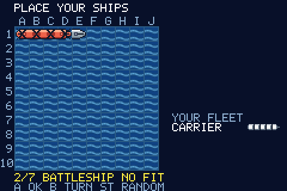
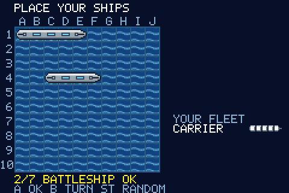
The screen
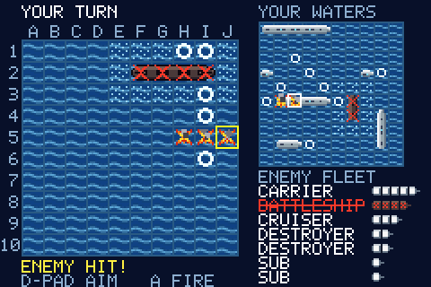
- Left, the big board: the enemy's waters, where you aim. The yellow square is your cursor.
- Top right, YOUR WATERS: your fleet and the enemy's shots. A white square marks its last shot.
- Bottom right, ENEMY FLEET: what you still have to sink. A sunk ship is crossed out in red.
- Bottom left: the result of the last shot.
Reading the boards
Unknown on the enemy's board. Nothing there on yours.
A miss.
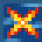
A hit on the enemy's board. It doesn't show which way the ship runs.
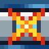
A hit on your own ship.
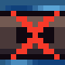
A sunk ship. Now you can see its shape.
Next to a sunk ship, so it can't hold a ship.
How a turn goes
You fire, then the enemy fires. A hit doesn't earn another shot.
Your shell arcs across the screen, and you only find out what it did when it lands: a splash for a miss, an explosion for a hit. A sinking blasts along the whole ship, with a bright flash and a shake, and the ship goes red in the fleet list. Then the enemy's turn runs the same way on your board.
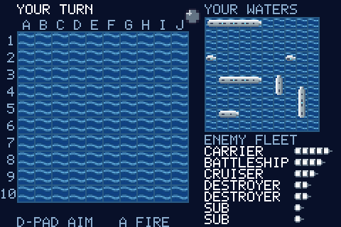
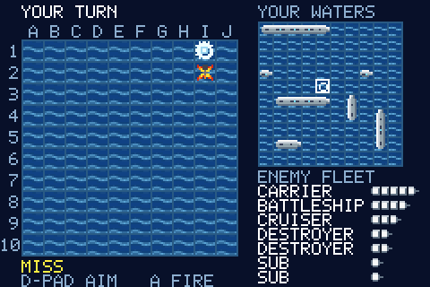
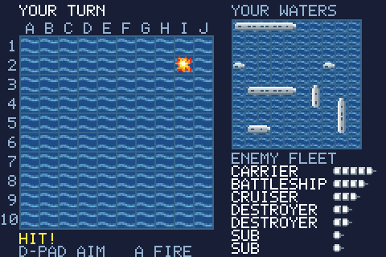
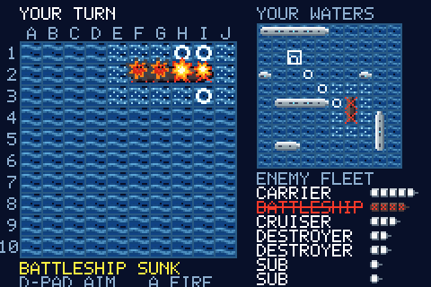
Each shot takes about a second. To hurry things along, press A or B while one is showing. That only skips the animation and never changes the result, and it doesn't fire your next shot. Holding a button down doesn't skip.
Two shots are refused and don't cost you a turn:
- ALREADY SHOT: you've fired at that square before.
- KNOWN WATER: the dotted squares around a sunk ship.
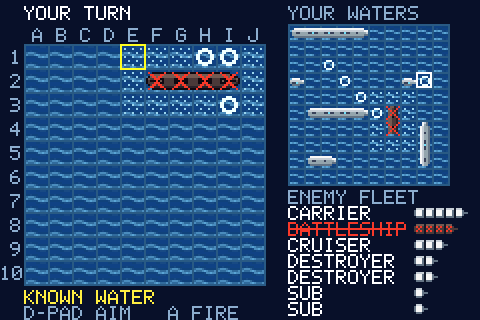
The levels
The computer plays fair at every level. It knows only what you could know: where its shots landed, and which ships it has sunk. It never looks at your hidden fleet.
EASY, NORMAL and HARD all try the squares around a hit and follow the line once they have two in a row. They differ in how they search:
| Level | How it searches | Average | Worst |
|---|---|---|---|
| EASY | At random, even into water it could rule out | 83 | 100 |
| NORMAL | At random, but clear of ships it has already found | 59 | 87 |
| HARD | At the square the most possible ship positions would cover | 54 | 81 |
| ADMIRAL | Imagines hundreds of whole fleets that fit what it has seen, and fires where most of them have a ship | 53 | 78 |
Average and Worst are the shots it takes to sink a random fleet, from simulated games. They're a target to beat: on NORMAL, you need to finish in under about 59 shots to win more often than not.
ADMIRAL also places its own fleet with care instead of at random. It deals several fleets and keeps the one that looks hardest to find, so expect to need a few more shots than on HARD. It's the only level that does this.
Winning and losing
The first side to lose all seven ships loses the game. You get the win or lose picture for about 5 seconds (after a moment you can skip it), then both fleets in full, your shots and how many of them hit. Press Start to play again.
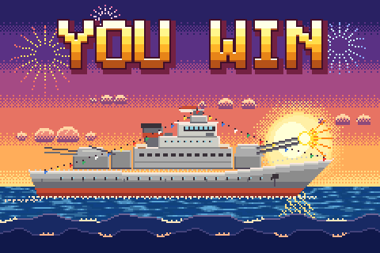
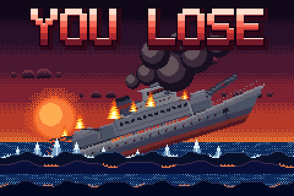
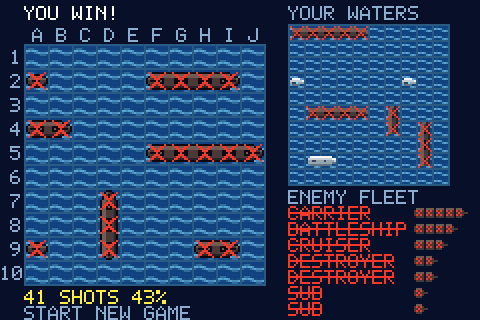
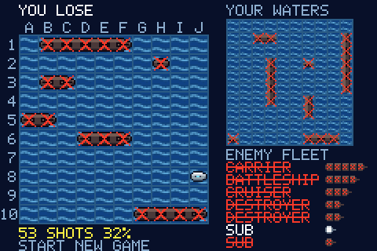
Tips
- The corners of a hit are always water. Ships run in straight lines and can't touch, so only the four squares directly next to a hit can hold the rest of that ship. Don't waste shots on the diagonals.
- Two hits in a row give you the line. The squares along the sides of those hits are water too.
- Spread your search. Until you've found the longer ships, fire with gaps between your shots. Close the gaps as the long ships go down. Check the fleet list to see what's left.
- Expect the subs to come last. A one-square sub can sit in any gap, and one hit sinks it. Dotted water helps a lot here, since it rules squares out for free.
- Use the wrap. The cursor wraps round the edges, so from column A, one press left takes you to column J.
- Check the edges on ADMIRAL. Its careful fleets sit on the edge of the board a little more often than a random fleet does, though not by so much that you can count on it.